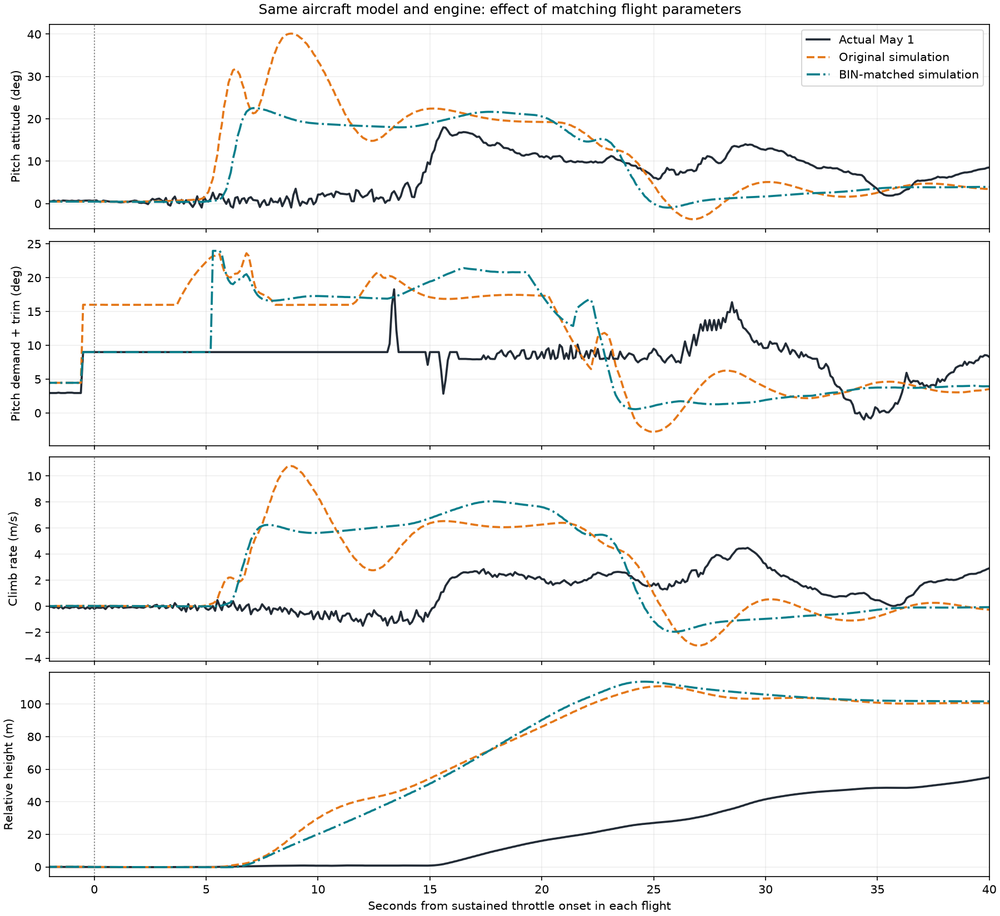
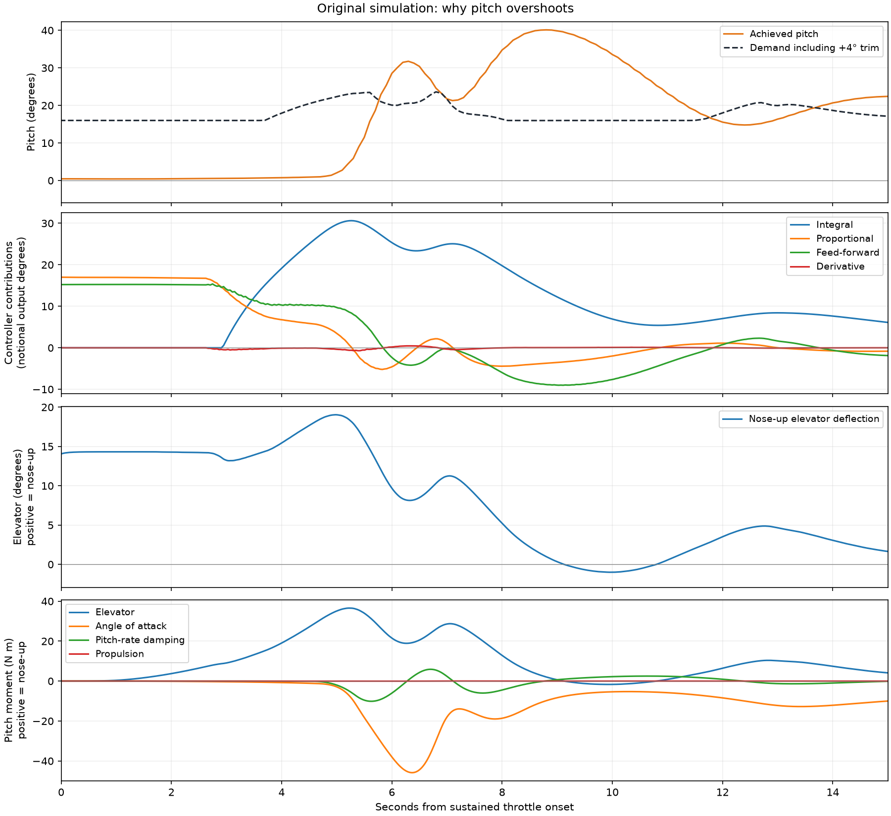

Back to cruise and takeoff comparisons
This investigation records the earlier BIN-matched configuration. The cruise-tuned model now adds an approved 75% takeoff throttle limit; see the current-default and steady-cruise checks.
See the tested options for reducing climb rate
The original simulation builds substantial nose-up integral output while still on the ground. At about 6 seconds it is already above its pitch demand, but the accumulated integral term still commands nose-up elevator. This is a control-loop and ground-to-air transition problem; it is not evidence of a reversed elevator or a direct engine pitching moment.
Matching the complete selected flight-parameter snapshot changes peak pitch from 40.1° to 22.6° in the first 30 seconds. Engine, aerodynamic coefficients, inertia and mission are identical for these two simulated runs. The actual May 1 takeoff peaks at 18.0° during the same event-relative interval.

Demand includes the recorded +4° pitch trim. The navigation pitch alone understates the attitude demand. All curves use independently detected throttle onset, not fitted time offsets. The actual mission, wind, loading, flap aerodynamics and electric assistance are not replayed.
| Experiment | Peak pitch (deg) | Peak climb (m/s) | Max pitch above demand (deg) | Demand at peak (deg) | Peak integral, first 6 s |
|---|---|---|---|---|---|
| baseline | 40.13 | 10.77 | 24.16 | 15.97 | 30.62 |
| scaling_speed | 26.09 | 8.06 | 10.79 | 21.23 | 24.18 |
| rotation_speed | 31.24 | 8.66 | 15.26 | 15.99 | 20.12 |
| both_settings | 28.44 | 7.95 | 10.76 | 22.60 | 29.65 |
| unscaled_moments | 67.29 | 16.13 | 51.53 | 15.76 | 33.29 |
| both_unscaled | 48.03 | 14.63 | 32.07 | 15.96 | 32.23 |
| bin_matched | 22.55 | 8.05 | 10.37 | 17.89 | 15.28 |
scaling_speed changes only SCALING_SPEED from 15 to 23; rotation_speed changes only TKOFF_ROTATE_SPD from 0 to 17 m/s; both_settings applies both. The unscaled_moments cases remove the provisional 3.78× multiplier from all five pitch-moment terms while preserving inertia. This also reduces aerodynamic damping and control effectiveness. It makes the overshoot worse, so reducing that multiplier is not a demonstrated fix. It does not validate the individual derivatives.
Each sensitivity run is a single deterministic 75-second mission. These experiments diagnose mechanisms, not statistical uncertainty or flight-model fidelity. Full BIN matching changes multiple parameters and cannot attribute its result to a single setting.

At about 5 seconds, the integral contribution reaches roughly 30 notional output degrees while the aircraft is still near level and the elevator is close to its nose-up travel limit. At 6 seconds, pitch is about 29° against roughly 20° demand including trim, yet elevator remains nose-up. The propulsive pitching moment in this interval is tiny compared with the elevator moment. Static stability, damping, control effectiveness, CG, pitch inertia and ground-contact geometry remain provisional and require separate identification.
config/sitl.parm is generated directly from 2026-05-01 14-00 - 13 flights.BIN, using the latest PARM value at or before 1111 seconds (the first May 1 takeoff). It supplies all Tiguar profiles launched by run_tiguar.sh or the default run_sitl.py path.
155 flight-control, navigation, takeoff, landing, mode and filter parameters match the recorded snapshot; 29 explicit simulator settings retain equivalent output axes, local operation, logging and environment. All 184 requested values were verified in the new simulated BIN. The source snapshot differs from end-of-day parameters; later changes are not replayed.
| model | parameter_values_verified | all_parameters_match | pipeline_passed |
|---|---|---|---|
| tig_da35_cruise | 184 | True | True |
| tig_calibrated | 184 | True | True |
| tig_da35 | 184 | True | True |
Each listed profile completed a 620-second mission and the four existing pipeline checks. These checks establish configuration loading and mission tracking, not agreement with actual flight dynamics. Per-model loaded parameter verification.
A BIN file contains autopilot configuration, not measured aerodynamic coefficients or physical control-surface calibration. Hardware device IDs, sensor offsets, RC interfaces and real ruddervator output assignments are not copied onto the equivalent simulator axes. Copied flap commands do not add flap aerodynamics, and the recalled electric assistance is still absent.
| name | source_value | simulator_value | loaded_value | action | matches |
|---|---|---|---|---|---|
| ACRO_LOCKING | 0.000000 | 0.000000 | 0.000000 | matched | True |
| ACRO_PITCH_RATE | 180.000000 | 180.000000 | 180.000000 | matched | True |
| ACRO_ROLL_RATE | 180.000000 | 180.000000 | 180.000000 | matched | True |
| ACRO_YAW_RATE | 0.000000 | 0.000000 | 0.000000 | matched | True |
| AIRSPEED_CRUISE | 23.000000 | 23.000000 | 23.000000 | matched | True |
| AIRSPEED_MAX | 30.000000 | 30.000000 | 30.000000 | matched | True |
| AIRSPEED_MIN | 18.000000 | 18.000000 | 18.000000 | matched | True |
| ALT_OFFSET | 0.000000 | 0.000000 | 0.000000 | matched | True |
| ARMING_CHECK | 1.000000 | 0.000000 | 0.000000 | simulation override | True |
| ARSPD_USE | 1.000000 | 1.000000 | 1.000000 | matched | True |
| CRUISE_ALT_FLOOR | 0.000000 | 0.000000 | 0.000000 | matched | True |
| FBWB_CLIMB_RATE | 3.000000 | 3.000000 | 3.000000 | matched | True |
| FBWB_ELEV_REV | 0.000000 | 0.000000 | 0.000000 | matched | True |
| FLAP_1_PERCNT | 0.000000 | 0.000000 | 0.000000 | matched | True |
| FLAP_1_SPEED | 0.000000 | 0.000000 | 0.000000 | matched | True |
| FLAP_2_PERCNT | 0.000000 | 0.000000 | 0.000000 | matched | True |
| FLAP_2_SPEED | 0.000000 | 0.000000 | 0.000000 | matched | True |
| FLAP_SLEWRATE | 30.000000 | 30.000000 | 30.000000 | matched | True |
| FLIGHT_OPTIONS | 0.000000 | 0.000000 | 0.000000 | matched | True |
| FLTMODE_CH | 5.000000 | 0.000000 | 0.000000 | simulation override | True |
| FS_GCS_ENABL | 3.000000 | 0.000000 | 0.000000 | simulation override | True |
| INS_ACCEL_FILTER | 20.000000 | 20.000000 | 20.000000 | matched | True |
| INS_GYRO_FILTER | 20.000000 | 20.000000 | 20.000000 | matched | True |
| KFF_RDDRMIX | 0.300000 | 0.300000 | 0.300000 | matched | True |
| KFF_THR2PTCH | 0.000000 | 0.000000 | 0.000000 | matched | True |
| LAND_ABORT_DEG | 0.000000 | 0.000000 | 0.000000 | matched | True |
| LAND_ABORT_THR | 1.000000 | 1.000000 | 1.000000 | matched | True |
| LAND_DISARMDELAY | 20.000000 | 20.000000 | 20.000000 | matched | True |
| LAND_FLAP_PERCNT | 50.000000 | 50.000000 | 50.000000 | matched | True |
| LAND_FLARE_AIM | 50.000000 | 50.000000 | 50.000000 | matched | True |
| LAND_FLARE_ALT | 3.000000 | 3.000000 | 3.000000 | matched | True |
| LAND_FLARE_SEC | 1.500000 | 1.500000 | 1.500000 | matched | True |
| LAND_OPTIONS | 0.000000 | 0.000000 | 0.000000 | matched | True |
| LAND_PF_ALT | 10.000000 | 10.000000 | 10.000000 | matched | True |
| LAND_PF_ARSPD | 19.000000 | 19.000000 | 19.000000 | matched | True |
| LAND_PF_SEC | 5.000000 | 5.000000 | 5.000000 | matched | True |
| LAND_PITCH_DEG | 3.000000 | 3.000000 | 3.000000 | matched | True |
| LAND_SLOPE_RCALC | 0.000000 | 0.000000 | 0.000000 | matched | True |
| LAND_THEN_NEUTRL | 0.000000 | 0.000000 | 0.000000 | matched | True |
| LAND_THR_SLEW | 80.000000 | 80.000000 | 80.000000 | matched | True |
| LAND_TYPE | 0.000000 | 0.000000 | 0.000000 | matched | True |
| LAND_WIND_COMP | 50.000000 | 50.000000 | 50.000000 | matched | True |
| LEVEL_ROLL_LIMIT | 5.000000 | 5.000000 | 5.000000 | matched | True |
| LOG_BITMASK | 65535.000000 | 65535.000000 | 65535.000000 | simulation override | True |
| LOG_DISARMED | 0.000000 | 1.000000 | 1.000000 | simulation override | True |
| NAVL1_DAMPING | 0.750000 | 0.750000 | 0.750000 | matched | True |
| NAVL1_LIM_BANK | 0.000000 | 0.000000 | 0.000000 | matched | True |
| NAVL1_PERIOD | 17.000000 | 17.000000 | 17.000000 | matched | True |
| NAVL1_XTRACK_I | 0.020000 | 0.020000 | 0.020000 | matched | True |
| PTCH2SRV_RLL | 1.000000 | 1.000000 | 1.000000 | matched | True |
| PTCH2SRV_RMAX_DN | 60.000000 | 60.000000 | 60.000000 | matched | True |
| PTCH2SRV_RMAX_UP | 60.000000 | 60.000000 | 60.000000 | matched | True |
| PTCH2SRV_TCONST | 0.900000 | 0.900000 | 0.900000 | matched | True |
| PTCH_LIM_MAX_DEG | 20.000000 | 20.000000 | 20.000000 | matched | True |
| PTCH_LIM_MIN_DEG | -25.000000 | -25.000000 | -25.000000 | matched | True |
| PTCH_RATE_D | 0.010000 | 0.010000 | 0.010000 | matched | True |
| PTCH_RATE_D_FF | 0.000000 | 0.000000 | 0.000000 | matched | True |
| PTCH_RATE_FF | 0.459566 | 0.459566 | 0.459566 | matched | True |
| PTCH_RATE_FLTD | 5.000000 | 5.000000 | 5.000000 | matched | True |
| PTCH_RATE_FLTE | 0.000000 | 0.000000 | 0.000000 | matched | True |
| PTCH_RATE_FLTT | 1.768388 | 1.768388 | 1.768388 | matched | True |
| PTCH_RATE_I | 0.459566 | 0.459566 | 0.459566 | matched | True |
| PTCH_RATE_IMAX | 0.666000 | 0.666000 | 0.666000 | matched | True |
| PTCH_RATE_NEF | 0.000000 | 0.000000 | 0.000000 | matched | True |
| PTCH_RATE_NTF | 0.000000 | 0.000000 | 0.000000 | matched | True |
| PTCH_RATE_P | 0.245272 | 0.245272 | 0.245272 | matched | True |
| PTCH_RATE_PDMX | 0.000000 | 0.000000 | 0.000000 | matched | True |
| PTCH_RATE_SMAX | 150.000000 | 150.000000 | 150.000000 | matched | True |
| PTCH_TRIM_DEG | 4.000000 | 4.000000 | 4.000000 | matched | True |
| RLL2SRV_RMAX | 75.000000 | 75.000000 | 75.000000 | matched | True |
| RLL2SRV_TCONST | 0.500000 | 0.500000 | 0.500000 | matched | True |
| RLL_RATE_D | 0.000980 | 0.000980 | 0.000980 | matched | True |
| RLL_RATE_D_FF | 0.000000 | 0.000000 | 0.000000 | matched | True |
| RLL_RATE_FF | 0.523321 | 0.523321 | 0.523321 | matched | True |
| RLL_RATE_FLTD | 10.000000 | 10.000000 | 10.000000 | matched | True |
| RLL_RATE_FLTE | 0.000000 | 0.000000 | 0.000000 | matched | True |
| RLL_RATE_FLTT | 3.183099 | 3.183099 | 3.183099 | matched | True |
| RLL_RATE_I | 0.006661 | 0.006661 | 0.006661 | matched | True |
| RLL_RATE_IMAX | 0.666000 | 0.666000 | 0.666000 | matched | True |
| RLL_RATE_NEF | 0.000000 | 0.000000 | 0.000000 | matched | True |
| RLL_RATE_NTF | 0.000000 | 0.000000 | 0.000000 | matched | True |
| RLL_RATE_P | 0.006661 | 0.006661 | 0.006661 | matched | True |
| RLL_RATE_PDMX | 0.000000 | 0.000000 | 0.000000 | matched | True |
| RLL_RATE_SMAX | 150.000000 | 150.000000 | 150.000000 | matched | True |
| ROLL_LIMIT_DEG | 45.000000 | 45.000000 | 45.000000 | matched | True |
| RUDDER_ONLY | 0.000000 | 0.000000 | 0.000000 | matched | True |
| RUDD_DT_GAIN | 10.000000 | 10.000000 | 10.000000 | matched | True |
| SCALING_SPEED | 23.000000 | 23.000000 | 23.000000 | matched | True |
| SCHED_LOOP_RATE | 50.000000 | 50.000000 | 50.000000 | matched | True |
| SERVO1_FUNCTION | 4.000000 | 4.000000 | 4.000000 | simulation override | True |
| SERVO1_MAX | 1850.000000 | 2000.000000 | 2000.000000 | simulation override | True |
| SERVO1_MIN | 1300.000000 | 1000.000000 | 1000.000000 | simulation override | True |
| SERVO1_REVERSED | 0.000000 | 0.000000 | 0.000000 | simulation override | True |
| SERVO1_TRIM | 1615.000000 | 1500.000000 | 1500.000000 | simulation override | True |
| SERVO2_FUNCTION | 2.000000 | 19.000000 | 19.000000 | simulation override | True |
| SERVO2_MAX | 1762.000000 | 2000.000000 | 2000.000000 | simulation override | True |
| SERVO2_MIN | 1455.000000 | 1000.000000 | 1000.000000 | simulation override | True |
| SERVO2_REVERSED | 0.000000 | 1.000000 | 1.000000 | simulation override | True |
| SERVO2_TRIM | 1540.000000 | 1500.000000 | 1500.000000 | simulation override | True |
| SERVO3_FUNCTION | 80.000000 | 70.000000 | 70.000000 | simulation override | True |
| SERVO3_MAX | 1965.000000 | 2000.000000 | 2000.000000 | simulation override | True |
| SERVO3_MIN | 1245.000000 | 1000.000000 | 1000.000000 | simulation override | True |
| SERVO3_REVERSED | 0.000000 | 0.000000 | 0.000000 | simulation override | True |
| SERVO3_TRIM | 1610.000000 | 1000.000000 | 1000.000000 | simulation override | True |
| SERVO4_FUNCTION | 80.000000 | 21.000000 | 21.000000 | simulation override | True |
| SERVO4_MAX | 2030.000000 | 2000.000000 | 2000.000000 | simulation override | True |
| SERVO4_MIN | 1130.000000 | 1000.000000 | 1000.000000 | simulation override | True |
| SERVO4_REVERSED | 1.000000 | 1.000000 | 1.000000 | simulation override | True |
| SERVO4_TRIM | 1600.000000 | 1500.000000 | 1500.000000 | simulation override | True |
| SERVO_AUTO_TRIM | 0.000000 | 0.000000 | 0.000000 | matched | True |
| SIM_WIND_SPD | NaN | 0.000000 | 0.000000 | simulation override | True |
| SIM_WIND_TURB | NaN | 0.000000 | 0.000000 | simulation override | True |
| STAB_PITCH_DOWN | 2.000000 | 2.000000 | 2.000000 | matched | True |
| STALL_PREVENTION | 1.000000 | 1.000000 | 1.000000 | matched | True |
| STICK_MIXING | 1.000000 | 1.000000 | 1.000000 | matched | True |
| TECS_APPR_SMAX | 2.000000 | 2.000000 | 2.000000 | matched | True |
| TECS_CLMB_MAX | 3.000000 | 3.000000 | 3.000000 | matched | True |
| TECS_FLARE_HGT | 3.000000 | 3.000000 | 3.000000 | matched | True |
| TECS_HDEM_TCONST | 3.000000 | 3.000000 | 3.000000 | matched | True |
| TECS_HGT_OMEGA | 3.000000 | 3.000000 | 3.000000 | matched | True |
| TECS_INTEG_GAIN | 0.100000 | 0.100000 | 0.100000 | matched | True |
| TECS_LAND_ARSPD | 21.000000 | 21.000000 | 21.000000 | matched | True |
| TECS_LAND_DAMP | 0.500000 | 0.500000 | 0.500000 | matched | True |
| TECS_LAND_IGAIN | 0.200000 | 0.200000 | 0.200000 | matched | True |
| TECS_LAND_PDAMP | 0.000000 | 0.000000 | 0.000000 | matched | True |
| TECS_LAND_PMAX | 8.000000 | 8.000000 | 8.000000 | matched | True |
| TECS_LAND_SINK | 0.100000 | 0.100000 | 0.100000 | matched | True |
| TECS_LAND_SPDWGT | 0.400000 | 0.400000 | 0.400000 | matched | True |
| TECS_LAND_SRC | 0.000000 | 0.000000 | 0.000000 | matched | True |
| TECS_LAND_TCONST | 4.000000 | 4.000000 | 4.000000 | matched | True |
| TECS_LAND_TDAMP | 0.000000 | 0.000000 | 0.000000 | matched | True |
| TECS_LAND_THR | -1.000000 | -1.000000 | -1.000000 | matched | True |
| TECS_OPTIONS | 0.000000 | 0.000000 | 0.000000 | matched | True |
| TECS_PITCH_MAX | 0.000000 | 0.000000 | 0.000000 | matched | True |
| TECS_PITCH_MIN | 0.000000 | 0.000000 | 0.000000 | matched | True |
| TECS_PTCH_DAMP | 0.400000 | 0.400000 | 0.400000 | matched | True |
| TECS_PTCH_FF_K | 0.000000 | 0.000000 | 0.000000 | matched | True |
| TECS_PTCH_FF_V0 | 12.000000 | 12.000000 | 12.000000 | matched | True |
| TECS_RLL2THR | 10.000000 | 10.000000 | 10.000000 | matched | True |
| TECS_SINK_MAX | 4.000000 | 4.000000 | 4.000000 | matched | True |
| TECS_SINK_MIN | 2.000000 | 2.000000 | 2.000000 | matched | True |
| TECS_SPDWEIGHT | 1.000000 | 1.000000 | 1.000000 | matched | True |
| TECS_SPD_OMEGA | 2.000000 | 2.000000 | 2.000000 | matched | True |
| TECS_SYNAIRSPEED | 0.000000 | 0.000000 | 0.000000 | matched | True |
| TECS_THR_DAMP | 0.900000 | 0.900000 | 0.900000 | matched | True |
| TECS_TIME_CONST | 4.000000 | 4.000000 | 4.000000 | matched | True |
| TECS_TKOFF_IGAIN | 0.000000 | 0.000000 | 0.000000 | matched | True |
| TECS_VERT_ACC | 7.000000 | 7.000000 | 7.000000 | matched | True |
| TERRAIN_ENABLE | 1.000000 | 0.000000 | 0.000000 | simulation override | True |
| THROTTLE_NUDGE | 1.000000 | 1.000000 | 1.000000 | matched | True |
| THR_FAILSAFE | 1.000000 | 0.000000 | 0.000000 | simulation override | True |
| THR_MAX | 100.000000 | 100.000000 | 100.000000 | matched | True |
| THR_MIN | 0.000000 | 0.000000 | 0.000000 | matched | True |
| THR_PASS_STAB | 0.000000 | 0.000000 | 0.000000 | matched | True |
| THR_SLEWRATE | 100.000000 | 100.000000 | 100.000000 | matched | True |
| THR_SUPP_MAN | 0.000000 | 0.000000 | 0.000000 | matched | True |
| TKOFF_ACCEL_CNT | 1.000000 | 1.000000 | 1.000000 | matched | True |
| TKOFF_ALT | 30.000000 | 30.000000 | 30.000000 | matched | True |
| TKOFF_DIST | 100.000000 | 100.000000 | 100.000000 | matched | True |
| TKOFF_FLAP_PCNT | 50.000000 | 50.000000 | 50.000000 | matched | True |
| TKOFF_GND_PITCH | 5.000000 | 5.000000 | 5.000000 | matched | True |
| TKOFF_LVL_ALT | 5.000000 | 5.000000 | 5.000000 | matched | True |
| TKOFF_LVL_PITCH | 15.000000 | 15.000000 | 15.000000 | matched | True |
| TKOFF_PLIM_SEC | 2.000000 | 2.000000 | 2.000000 | matched | True |
| TKOFF_ROTATE_SPD | 17.000000 | 17.000000 | 17.000000 | matched | True |
| TKOFF_TDRAG_ELEV | -5.000000 | -5.000000 | -5.000000 | matched | True |
| TKOFF_TDRAG_SPD1 | 15.000000 | 15.000000 | 15.000000 | matched | True |
| TKOFF_THR_DELAY | 2.000000 | 2.000000 | 2.000000 | matched | True |
| TKOFF_THR_MAX | 0.000000 | 0.000000 | 0.000000 | matched | True |
| TKOFF_THR_MAX_T | 4.000000 | 4.000000 | 4.000000 | matched | True |
| TKOFF_THR_MINACC | 0.000000 | 0.000000 | 0.000000 | matched | True |
| TKOFF_THR_MINSPD | 0.000000 | 0.000000 | 0.000000 | matched | True |
| TKOFF_THR_SLEW | 80.000000 | 80.000000 | 80.000000 | matched | True |
| TKOFF_TIMEOUT | 0.000000 | 0.000000 | 0.000000 | matched | True |
| TRIM_THROTTLE | 16.000000 | 16.000000 | 16.000000 | matched | True |
| WP_LOITER_RAD | 200.000000 | 200.000000 | 200.000000 | matched | True |
| WP_MAX_RADIUS | 0.000000 | 0.000000 | 0.000000 | matched | True |
| WP_RADIUS | 80.000000 | 80.000000 | 80.000000 | matched | True |
| YAW2SRV_DAMP | 0.200000 | 0.200000 | 0.200000 | matched | True |
| YAW2SRV_IMAX | 1500.000000 | 1500.000000 | 1500.000000 | matched | True |
| YAW2SRV_INT | 0.000000 | 0.000000 | 0.000000 | matched | True |
| YAW2SRV_RLL | 1.000000 | 1.000000 | 1.000000 | matched | True |
| YAW2SRV_SLIP | 0.000000 | 0.000000 | 0.000000 | matched | True |
| YAW_RATE_ENABLE | 0.000000 | 0.000000 | 0.000000 | matched | True |
Recreate the shared configuration: python3 scripts/match_sitl_parameters.py. Run a chosen model with python3 scripts/run_sitl.py --model tig_da35_cruise --name my_run --profile --duration 620. A deliberate experimental override is possible with --param-file.
Experiment metrics · Run provenance · Loaded parameter checks · Complete import audit, including excluded parameters